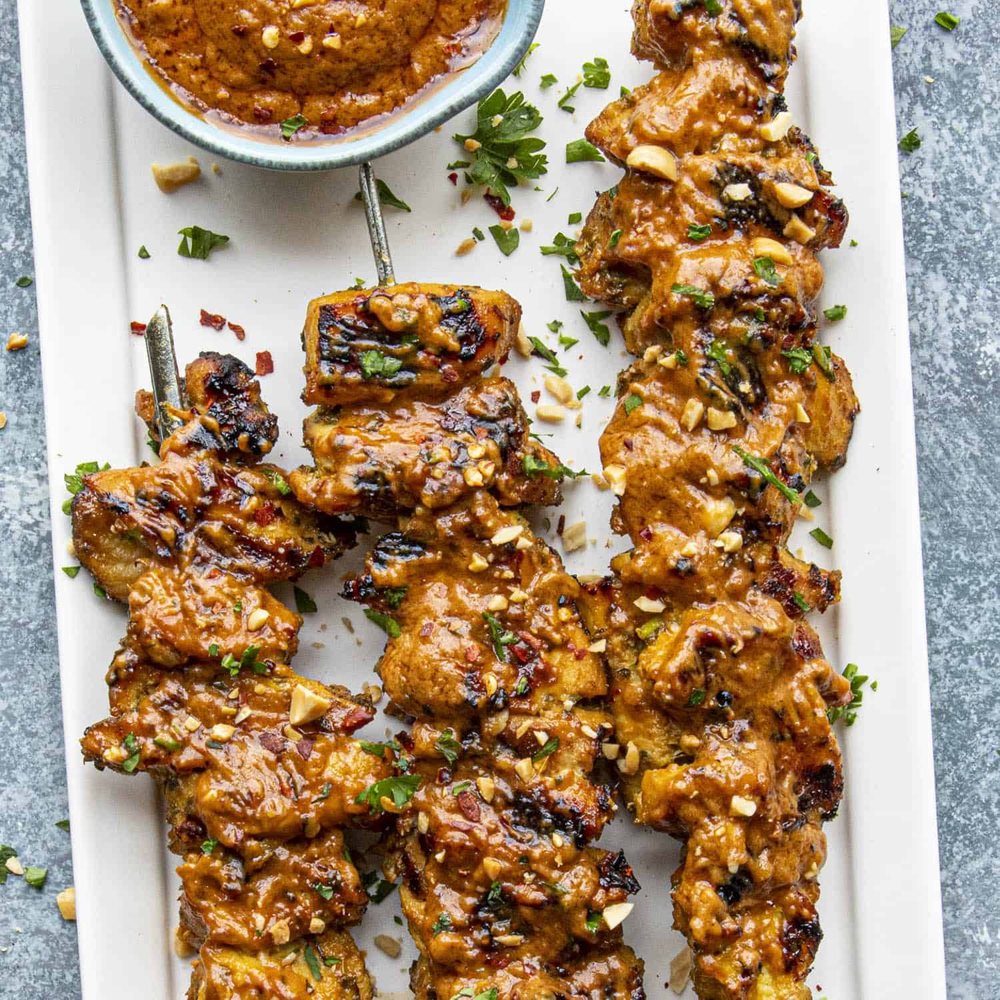
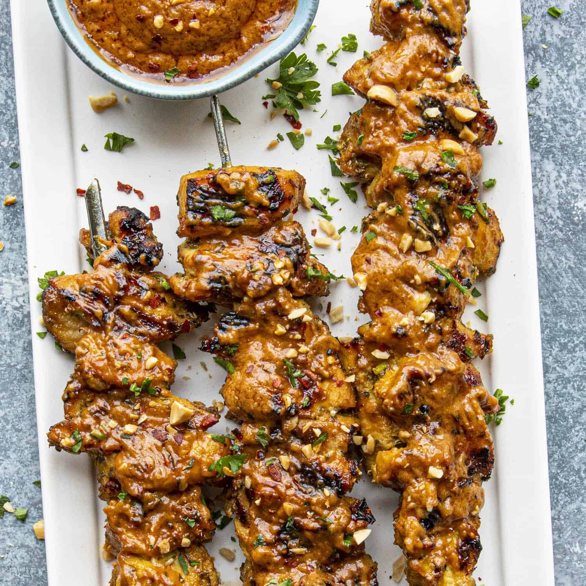

What's so great about combining the worlds of coding and cuisine? Dev Dish was founded by two passionate developers who turned their love for software into a culinary adventure. After years of coding by day and cooking by night, they decided to merge their two passions and create something extraordinary.
Dev Dish brings a unique twist to the food truck scene, offering a menu full of creative, tech-inspired dishes. Whether you're a tech enthusiast or a food lover, our offerings are designed to satisfy both your appetite and your curiosity.
Dev Dish is the brainchild of Alex and Jamie, two friends who met at a hackathon and discovered a shared love for innovative cuisine. With a background in software development and a knack for culinary creativity, they embarked on a journey to deliver delicious, tech-themed dishes to the community.
Enjoy Dev Dish fan favorite menu items at local events or book us for a visit to your neighborhood or for your special occasion.

 

511 Tristin Isle Park, Hudsonton, Michigan